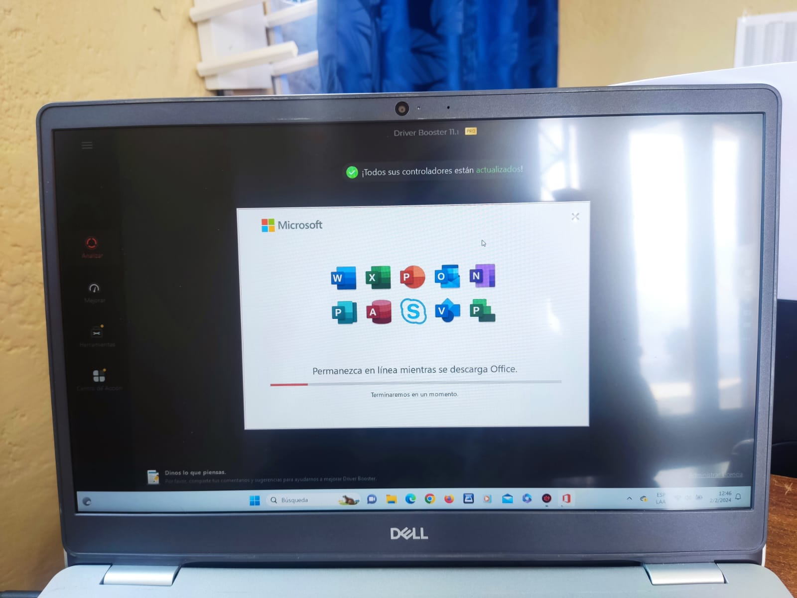
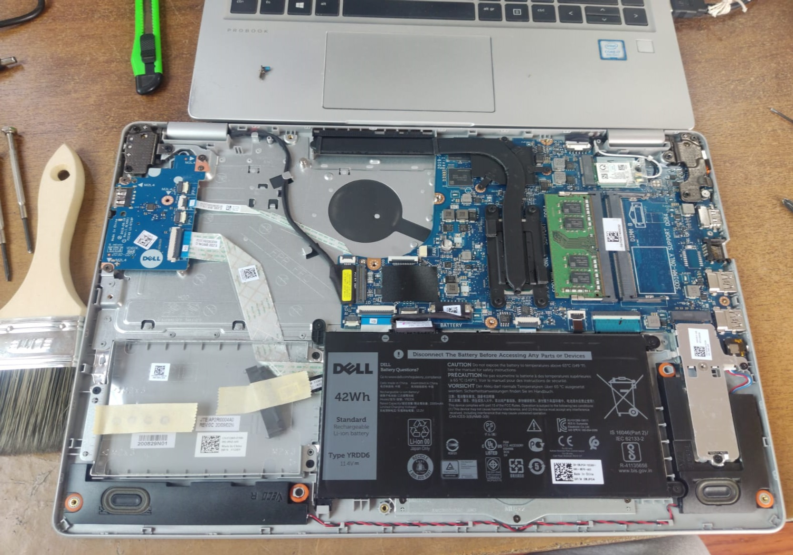
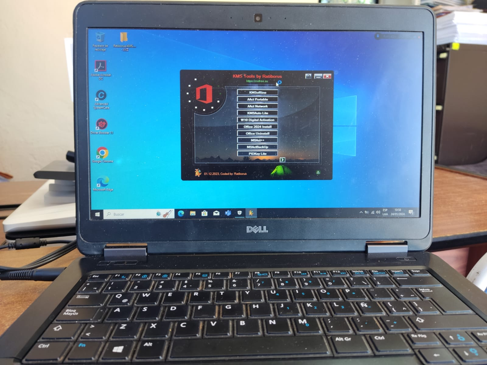
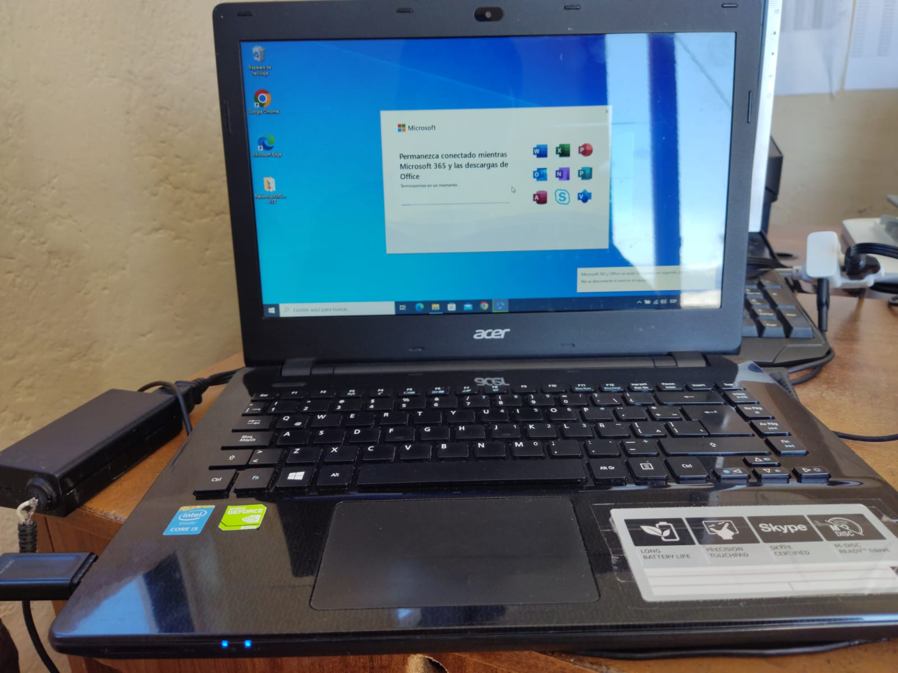
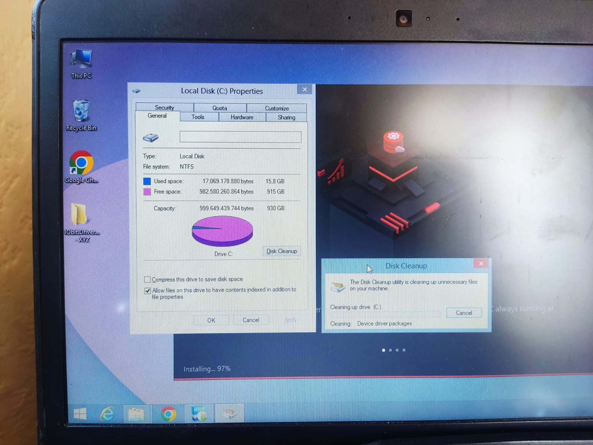

Experiencias Laborales
Mi Experiencia En Los Bomberos Pedro Moncayo
Nombre: Klever Xavier Tituaña Rivera
Curso: 3ro de Bachillerato Técnico "A"
Fecha: 16 de Febrero de 2024
Para iniciar el primer día llegue demasiado puntual en el bus de las 6 es decir,
llegue a Tabacundo a las 6:55, y como entramos a las 8 me tocó esperar.
Una semana fueron suspendidas las practicas laborales debido a situaciones que estaba
cruzando el País en el que vivimos.
Conocí a casi todas las personas que trabajaban ahí, la verdad me llevé muy bien con todos,
incluso con el supervisor que estaba a mi cargo, con el me llevo incluso hasta ahora, seguimos
cruzando palabras o audios.
Realizé varios trabajos en computadoras de escritorio y portátiles, aunque también ayudé a
orgranizar y digitalizar los documentos de inspecciones de varios años que no estaban digitalizados.
Adjunto trabajos realizados en Computadoras





Los trabajos realizados en estas portátiles fueron: Formateo De Disco Duro, Recuperación De Informacion,
Mantenimiento A Nivel De Software Y Componentes, Instalación De Windows Con Su Respectiva Clave De Activación,
Instalación Del Paquete Office Con Su Respectiva Clave De Activación, Instalación De Unidad De Estado Solido
SSD M.2, Respaldo De Información, Actualización De Drivers, Entre otras.
Casi siempre bromeabamos entre las personas que estabamos ahí, fue una experiencia laboral buena ya que
convivía muy bien con todos.